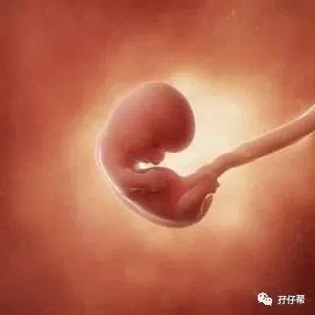
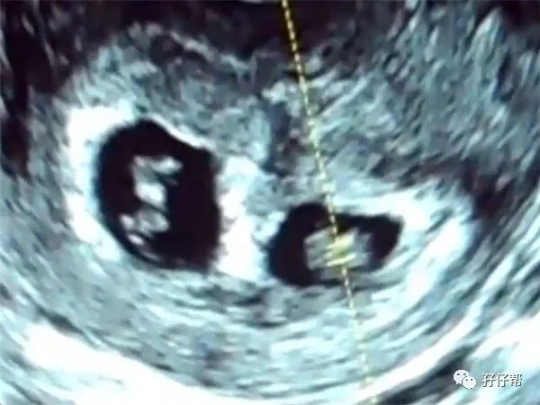
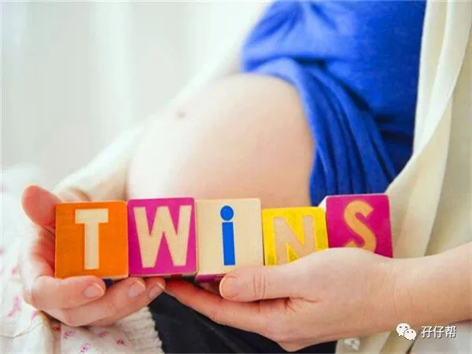
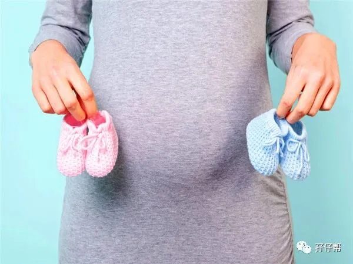
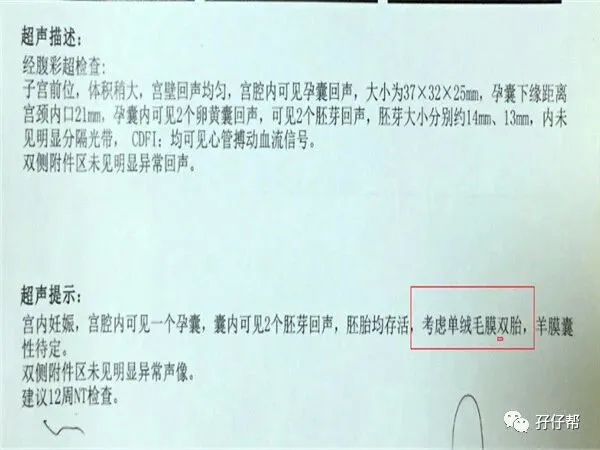

⬆⬆关注孖仔帮，与您分享双胞胎育儿经⬆⬆
文|圆圈妈 一个文思如尿崩的双胎妈妈
图|来自网络
双胎妊娠的第8周
两胎儿的发育情况
孕8周的胎宝宝，大概有小蚕豆那么大，从头到臀部长1.7CM，体重约3.6G⏬⏬
孕8周的双胞胎胎儿发育图⏬⏬：
B超孕8周的双胞胎胎儿影像图⏬⏬：
圆圈妈的孕期回忆录
ℹ孕8周，进入孕期第二个月，我的生活脱轨乱套了
孕吐加重：从这周开始，孕吐似乎一夜间就加重了，每天早晨刷牙都要猛烈呕吐一番，直到吐出一堆恶心的黄疸水才善罢甘休。
我不敢看镜中的自己，想必是吐到面目狰狞，脸都扭曲变形了。
心情很不爽： 身体的巨大改变导致我的心情很低落。我对自己的体质很有信心，怎么也没料到平素身体素质挺好的我，为何孕吐这么大反应。
圆圈爸还开玩笑说可能里面有两个所以加倍...呵呵，我只当是安慰话，压根没往心里去！
自然受孕怀上双胞胎的概率是1/88,我和圆圈爸的运气向来很差，这种事情若砸在我俩的头上，那真是奇迹了！
结果，真的奇迹了！
ℹ第一次做B超，发现双胞胎
1月10日，孕8周2天,吃完了第一个疗程的黄体酮，去市二院复查孕酮，医生开了B超单子，让确认是否宫内妊娠。
这是孕期第一次B超，正是这次B超才发现我怀的是一对双胞胎。
记录下我的第一次B超，看看我发现怀上双胞胎后的怂样。
🔸🔸01🔸🔸
“哇,我今天中彩了,发现两个胎心胎芽”.
刚躺下一会,探头刚划过肚子，就听到一年轻医生大喊一声，另一年长女医生听到后,赶紧跑过去看。
“医生,有什么问题吗？”
“纳尼？啥是两个胎心胎芽啊”第一胎，没经验，真可怕！我弱弱问了下。
“可能是双胞胎，但也有可能是囊肿！”
医生的回答把我吓得心跳漏了半拍。
“双胞胎？囊肿？”不管是哪个都把我吓得不轻啊！
由于我憋尿不够,被医生赶出B超室，继续憋!圆圈爸得知医生扔给我的 “精神炸弹”---双胞胎OR囊肿，一脸懵逼。
继续憋尿的那30分钟真漫长..感觉要爆膀胱了，更重要的是， 不管结果是哪个，我都震惊到说不出话，当时深圳那么冷的天气，我活生生地被吓出手心手背都是汗...
双胞胎？我祖上有生双胞胎的基因吗？据我所知，我的直系和旁系亲属都没有这个待遇！
囊肿？恶性？良性？严重吗？
第二次进去B超室，除了原来两位医生，又多了个白头发的男医生，我心里咯噔了下，坏了！不会真的是囊肿吧，不然怎么还搞个医生会诊啊。
“医生，是囊肿吗？”
白头发男医生拿着探头在我肚子上又滑动了好久，我忍不住发问。
“不是，是双胞胎！羊胎膜属性还不确定！”
（即共用一个胎盘但不确定是分开两个羊水还是共用一个羊水）
双胞胎!?我怀上双胞胎了?!这是个笑话吗?还是做梦啊?
我面无表情的继续躺着，不要问我此刻心里在想什么，我只知道，我和圆圈爸玩大了！居然整出两个娃娃！
这哪是惊喜，简直是惊吓！
🔸🔸02🔸🔸
走出B超室，我很平静地对圆圈爸说：“确认是两个蛋黄！”
圆圈爸瞬间张目结舌，难以置信，看到报告单上那模糊的小小的两个点，说话都语无伦次了！
下图是我第一次B超的报告单⏬⏬
我们诚惶诚恐地跑去问医生。
“呦呵，双胞胎啊，要不要的啊？
医生慎重地问。
“要！”
我和圆圈爸异口同声地说，虽然很反感医生这样的反应，虽然还没捋清楚是什么回事，先把这一对“双蛋黄”认了再说了。
接下来我听到很多从来没有听过的专业名词，如“双胞胎输血综合征”，没想到这个词贯穿我整个双胎孕期，把我折磨得体无完肤。
医生在我的病例上写着显眼的四个字“高危妊娠”，并简单告知了双胎妊娠有可能发生的并发症。
由于孕酮还是偏低，医生又开了黄体酮让我继续服用，还说了好多吓人的话，说我是双胎，孕酮低更容易流产的。
我和圆圈爸看着那个“高危妊娠”，又喜又惊又怕，好像我们两做了什么天大的事，两人你看看我，我看看你，傻眼了，无语了...走路都歪歪斜斜，兜了一大圈才走出了医院。
我们回到家，拿着B超单看了N遍，终于缓过神了。意味着，8个月之后，我们的两人世界就会一下子多出两个小屁孩。
我们都故作镇定，平静地把这个消息告诉了双方的家长，大家都表示不可思议极了！
而我，从此开始我的刀尖上，悬崖边的漫漫双胎孕期之路。
孕8周，有两个重要提示
ℹ孕8周做B超，准备计划生育证明
也许你早已按耐不住孕6周就去做B超了，不过还是建议你熬到孕8周比较合适。若太早做，只有孕囊还查不到胎心胎芽，只会让自己更加担忧。
孖仔帮孕期群有一准妈妈孕6周查B超说发现孕囊，其中一个有胎心，另一个没有胎心，可把她急坏了。
两个小种子发芽有分先后，怎么就不允许人类的胚芽不分先后了呢？才6周，一个有胎心一个没胎心，只能说一个发育快慢的问题，后面她告诉我10周发现两个都有胎心了。
如果孕8周还没有做过B超，建议孕周8or孕9周，尽快做一次B超确认是否宫内妊娠，同时为产检走生育险做好准备。
要是双胎，这个孕周完全可以看到两个胎心胎芽，而且可以很清楚地看到绒毛膜性。
若B超提示一个孕囊（妊娠囊）内发现两个卵黄囊，就是同卵双胎。
若发现有两个孕囊，一般是异卵双胎。
大多数情况下，此时的羊膜囊性质还无法判断出来，有些不是很严谨的医生没看到羊膜囊性质会提示单绒单羊，后面加个问号，那就需要等12周NT 再复查确认了。
我选择在孕8周做B超，除了是医生要求做，还有一个原因是产检走生育险做准备。
B超单作为唯一妊娠证明是申请深圳市计划生育证明的必备材料之一。
别小看这个计划生育证明，用处很大哦，我去挂产科号，出示该证明，挂号费只需要一块钱。因此，计划生育证明，生娃必备！
ℹB超发现双胎，惊吓多过惊喜
纵观各大双胎育儿群，发现大多数宝妈都是在孕8周左右才发现是双胎妊娠，有些靠人工辅助技术的宝妈甚至在孕6周就知道了。
如果是二胎妈妈此刻查出双胞胎，不知道又是怎样的心情，我体会不到，也脑补不了。
常有二胎怀上双胞胎的准妈妈私聊我，一脸愁容，说怕养不起，想减胎，问我可不可以。
我不能理解有人会因为经济压力大就想到要杀掉其中一个孩子。
如果是我，一胎双胞胎，二胎再来双胞胎，我也不会想到减胎。
再来一对双胞胎，我可能会痛苦一阵子，但如果减胎，我一定会痛苦一辈子！
这个事情拿来问我，真的不妥哦！宝妈应该理直气壮找宝爸，让他加紧赚钱迎接两宝宝的到来。
┈☞未完待续☜┉
上期推文:
连载（一）|圆圈妈双胞胎怀孕过程第4周
连载（二）|圆圈妈双胞胎怀孕过程第5周
连载（三）|圆圈妈双胞胎怀孕过程第6周
连载（四）|圆圈妈双胞胎怀孕过程第7周
下期预告：
连载（六）|圆圈妈双胞胎怀孕过程第9周
本文系圆圈妈sgguy-com原创，来源于孖仔帮，专注双胞胎孕期育儿经验分享，著作权归孖仔帮所有。
---☜✪ The end ✪☞---
关于这个号
谢谢关注！我是圆圈妈
85后，全职双胎妈妈
家有孖仔两枚，圆圈&圈圈
双胞胎育儿公众号：孖仔帮
旨意分享双胞胎育儿经验帮助双胞胎家庭
有经验可循
有组织可靠
希望我的经验对您有所启发
期待与您一起共享双胞胎育儿经
孖仔帮目前有4个微信社群
孕期群，喂养群，闲置群，双胞胎爸爸专属群，
如需入交流群，请+圆圈妈的微信号sgguy-com,或扫描下方二维码
由圆圈妈邀请入群
添加请注明：
宝妈/宝爸，孕期/已生
长按二维码，加圆圈妈好友
往期精彩文章回顾：
105：同卵双胞胎的天敌--双胞胎输血综合征
106：官宣：双绒双羊，单绒双羊，单绒单羊傻傻分不清？一篇消除你所有疑问
215：双胎子宫日记系列|（下）你看不看？双胞胎妈妈直播剖腹产全过程
219：双胞胎准爸爸的生存指南：不做猪一样的队友，活着出来喜当爹
306：真人示范！双胞胎妈妈高难度喂母乳技巧
312：为出生就进NICU的双胞胎新生儿，我必须告诉你这5个通关秘籍
407：嘿！双胞胎孩子的亲子阅读攻略，要来一份吗（1--2岁阶段）
605：看过这份最简单的双胞胎宝宝用品囤货清单，其他的都是将就
608：听说...你在找双胞胎育儿神器，这事儿我熟！
723：双胎妈妈，为什么我不建议你这样坐月子...
我猜你肯定喜欢看上面的文章，对不对嘛？关注孖仔帮，回复文章前面的数字编号即可阅读。
长按识别二维码关注我们
更多孖仔帮双胞胎原创育儿文章，
请猛戳 "阅读原文"
或者直接上圆圈妈的个人博客。
博客链接↓↓
https://www.sgguy.com/twinsbang
#重磅互动#
评论区聊一聊
你希望圆圈妈写什么育儿经验干货？
随便提，万一下篇就写了呢？





